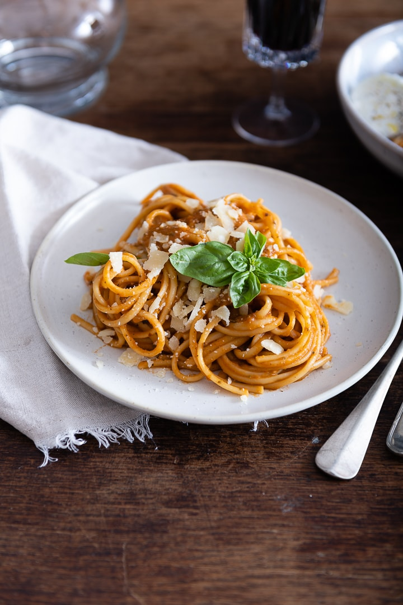

Pasta Salad with Homemade Dressing

Description
A homemade Italian pasta salad dressing takes this simple pasta salad loaded with veggies, cheese, pepperoni, and olives to a whole new level!
Serve it right away or make it ahead for packed lunches, picnics, or summer barbecues.
Ingredients
- pasta
- pesto
- tomatoes
- olive oil
- cheese
Steps
- Gather all ingredients.
- Bring a large pot of lightly salted water to a boil. Add rotini and cook until tender yet firm to the bite, 8 to 10 minutes. Drain, rinse with cold water, and drain again.
- Transfer drained, cooked pasta to a large bowl. Add pepperoni, provolone cheese, red onion, cucumber, bell peppers, olives, parsley, and Parmesan cheese.
- Mix olive oil, vinegar, garlic, basil, oregano, ground mustard, salt, and pepper for dressing in a jar with a lid. Seal the jar, and shake until well combined.
- Pour dressing over the pasta salad; toss until well coated. Serve immediately, or cover and chill in the refrigerator for up to 8 hours before serving.